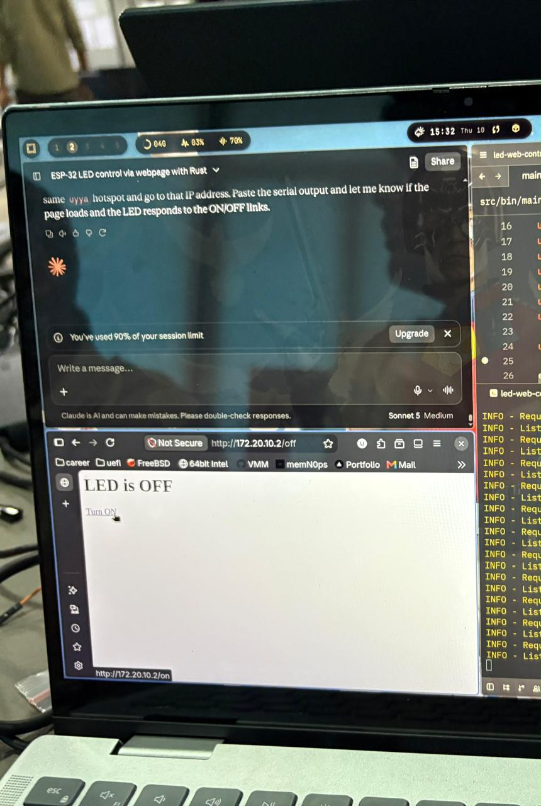
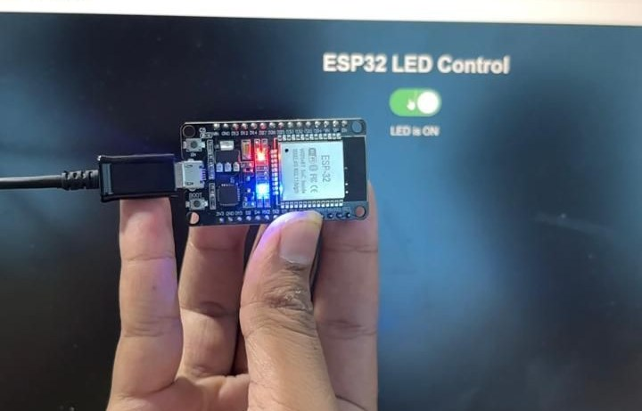
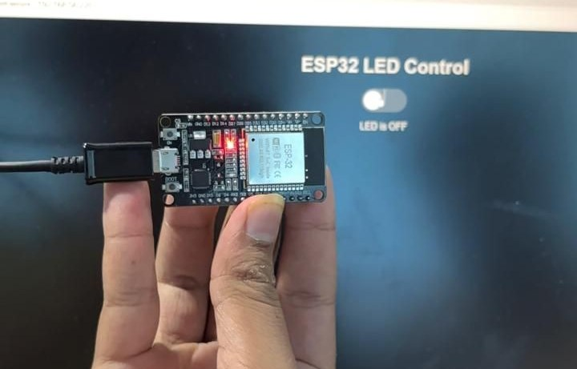

1Overview
The objective of Task 1 is to transform an ESP32-C3 RISC-V microcontroller into a standalone HTTP web server operating on the local Wi-Fi network. By connecting any device with a standard web browser (such as a smartphone or laptop), the user can view the current LED state and toggle the physical LED on and off by clicking web buttons.
Rather than using standard C++ libraries, this implementation is built entirely in bare-metal Rust (no_std) utilizing the Embassy asynchronous framework, esp-hal, and esp-radio, providing strict memory safety and minimal memory overhead.
2Concepts
Embedded HTTP Web Server: HTTP is an application-level request-response protocol running over TCP. The ESP32-C3 binds an asynchronous TCP listener on port 80. When a browser connects, the firmware parses the incoming HTTP request line (e.g., GET /on HTTP/1.1), executes the corresponding hardware routine, and responds with a valid HTTP/1.1 response containing an HTML payload.
Station Mode & DHCP: The ESP32-C3 Wi-Fi radio operates in Station (STA) mode, connecting to a local 2.4 GHz wireless Access Point. Using embassy-net's built-in DHCP client, the MCU negotiates an IPv4 address on the local subnet.
Non-Blocking Async Event Loop: Instead of blocking threads with busy-waiting loops, Embassy uses cooperative green tasks managed by an async executor. Network polling, timer ticks, and socket reads suspend their task when idle, leaving the RISC-V core in low-power wait-for-interrupt states.
3Architecture & Data Flow
4Hardware & Software
| Hardware Component | Software & Toolchain |
|---|---|
| ESP32-C3 (RISC-V 32-bit core) | Rust Toolchain (nightly/stable riscv32imc-unknown-none-elf) |
| Red 5mm LED | esp-hal v1.1.0 (Hardware Abstraction Layer) |
| 220 Ω Current-limiting Resistor | embassy-net & embassy-executor (Async runtime) |
| Half-size Breadboard & Jumper Wires | esp-radio (Espressif 802.11 Wi-Fi stack) |
| USB-C Data Cable | espflash cargo flash runner & serial monitor |
5Wiring / Setup
| ESP32-C3 Pin | Breadboard Connection | Logic State |
|---|---|---|
GPIO 10 |
LED Anode (longer leg) | HIGH (3.3V) = ON, LOW (0V) = OFF |
GND |
220 Ω resistor to LED Cathode (shorter leg) | Ground Reference |
6Implementation
src/bin/main.rs (Embedded Rust) view on GitHub
#![no_std]
#![no_main]
extern crate alloc;
use alloc::format;
use alloc::string::ToString;
use embassy_executor::Spawner;
use embassy_net::tcp::TcpSocket;
use embassy_time::{Duration, Timer};
use embedded_io_async::Write as _;
use esp_backtrace as _;
use esp_hal::clock::CpuClock;
use esp_hal::gpio::{Level, Output, OutputConfig};
use esp_hal::timer::timg::TimerGroup;
use log::info;
esp_bootloader_esp_idf::esp_app_desc!();
const SSID: &str = "YOUR_WIFI_SSID";
const PASSWORD: &str = "YOUR_WIFI_PASSWORD";
macro_rules! mk_static {
($t:ty,$val:expr) => {{
static STATIC_CELL: static_cell::StaticCell<$t> = static_cell::StaticCell::new();
let x = STATIC_CELL.uninit().write(($val));
x
}};
}
#[esp_rtos::main]
async fn main(spawner: Spawner) -> ! {
esp_println::logger::init_logger_from_env();
let config = esp_hal::Config::default().with_cpu_clock(CpuClock::max());
let peripherals = esp_hal::init(config);
esp_alloc::heap_allocator!(#[ram(reclaimed)] size: 64 * 1024);
esp_alloc::heap_allocator!(size: 36 * 1024);
let timg0 = TimerGroup::new(peripherals.TIMG0);
let sw_interrupt =
esp_hal::interrupt::software::SoftwareInterruptControl::new(peripherals.SW_INTERRUPT);
esp_rtos::start(timg0.timer0, sw_interrupt.software_interrupt0);
info!("Embassy initialized!");
let led = Output::new(peripherals.GPIO10, Level::Low, OutputConfig::default());
let (controller, interfaces) =
esp_radio::wifi::new(peripherals.WIFI, Default::default()).unwrap();
let wifi_interface = interfaces.station;
let net_config = embassy_net::Config::dhcpv4(Default::default());
let rng = esp_hal::rng::Rng::new();
let seed = (rng.random() as u64) << 32 | rng.random() as u64;
let (stack, runner) = embassy_net::new(
wifi_interface,
net_config,
mk_static!(
embassy_net::StackResources<3>,
embassy_net::StackResources::<3>::new()
),
seed,
);
spawner.spawn(connection(controller).expect("spawn connection"));
spawner.spawn(net_task(runner).expect("spawn net runner"));
info!("Waiting for IP address...");
loop {
if let Some(cfg) = stack.config_v4() {
info!("Got IP: {}", cfg.address);
break;
}
Timer::after(Duration::from_millis(500)).await;
}
spawner.spawn(web_task(stack, led).expect("failed to spawn web task"));
loop {
Timer::after(Duration::from_secs(3600)).await;
}
}
#[embassy_executor::task]
async fn connection(mut controller: esp_radio::wifi::WifiController<'static>) {
let station_config = esp_radio::wifi::Config::Station(
esp_radio::wifi::sta::StationConfig::default()
.with_ssid(SSID)
.with_password(PASSWORD.to_string()),
);
controller.set_config(&station_config).unwrap();
loop {
info!("Connecting...");
match controller.connect_async().await {
Ok(info) => info!("Connected! {:?}", info),
Err(e) => {
info!("Failed to connect: {:?}", e);
Timer::after_secs(5).await;
continue;
}
}
let _ = controller.wait_for_disconnect_async().await;
info!("Disconnected, retrying...");
Timer::after_secs(5).await;
}
}
#[embassy_executor::task]
async fn net_task(mut runner: embassy_net::Runner<'static, esp_radio::wifi::Interface<'static>>) {
runner.run().await
}
#[embassy_executor::task]
async fn web_task(stack: embassy_net::Stack<'static>, mut led: Output<'static>) {
let mut rx_buffer = [0u8; 1024];
let mut tx_buffer = [0u8; 1024];
loop {
let mut socket = TcpSocket::new(stack, &mut rx_buffer, &mut tx_buffer);
socket.set_timeout(Some(Duration::from_secs(10)));
info!("Listening on port 80...");
if let Err(e) = socket.accept(80).await {
continue;
}
let mut buf = [0u8; 512];
let n = match socket.read(&mut buf).await {
Ok(0) => { socket.close(); continue; }
Ok(n) => n,
Err(_) => { socket.close(); continue; }
};
let request = core::str::from_utf8(&buf[..n]).unwrap_or("");
let path = request.split_whitespace().nth(1).unwrap_or("/");
let body = if path == "/on" {
led.set_high();
"<html><body><h1>LED is ON</h1><a href=\"/off\">Turn OFF</a></body></html>"
} else if path == "/off" {
led.set_low();
"<html><body><h1>LED is OFF</h1><a href=\"/on\">Turn ON</a></body></html>"
} else {
"<html><body><h1>ESP32-C3 LED Control</h1><a href=\"/on\">ON</a> | <a href=\"/off\">OFF</a></body></html>"
};
let response = format!(
"HTTP/1.1 200 OK\r\nContent-Type: text/html\r\nContent-Length: {}\r\nConnection: close\r\n\r\n{}",
body.len(),
body
);
let _ = socket.write_all(response.as_bytes()).await;
let _ = socket.flush().await;
socket.close();
Timer::after_millis(100).await;
socket.abort();
}
}7Configuration & Flashing
- Install the RISC-V Rust target:
rustup target add riscv32imc-unknown-none-elf. - Configure your 2.4 GHz Wi-Fi SSID and password in
src/bin/main.rs. - Connect the ESP32-C3 board to your host via USB.
- Run
cargo run --release. The binary compiles with LLVM link-time optimization (LTO) and flashes automatically usingespflash. - Observe the Serial Monitor for the assigned IP address (e.g.
192.168.1.50). - On any device on the same Wi-Fi, navigate to
http://192.168.1.50/and toggle the LED.
8Evidence



9Challenges & Fixes
Problem: Heap allocation crash on bare-metal startup.
Why: In no_std Rust, there is no OS-level glibc malloc. Dynamic formatting of the HTTP response string failed when memory was uninitialized.
Fix: Initialized dual heap allocators using esp_alloc::heap_allocator!(#[ram(reclaimed)] size: 64 * 1024) and 36 * 1024 directly in SRAM prior to RTOS scheduler startup.
Problem: TCP socket state lingering after connection close.
Why: HTTP clients in mobile browsers keep sockets open with keep-alive headers, blocking subsequent incoming connections on a single-socket embedded server.
Fix: Explicitly sent Connection: close HTTP header, flushed the TCP stream, waited 100 ms, and invoked socket.abort() to immediately return the socket to listening state.
Problem: 5 GHz Wi-Fi invisibility.
Why: The ESP32-C3 radio hardware is strictly 2.4 GHz (802.11 b/g/n).
Fix: Dedicated 2.4 GHz SSID configuration verified via serial diagnostics loop with automatic reconnection retry.
10Reflection
Implementing a web server in bare-metal Rust provided an intimate understanding of low-level networking. Unlike abstractions where HTTP servers run invisibly behind multi-megabyte frameworks, writing the raw TCP socket handling in Embassy highlighted the exact mechanics of HTTP parsing, buffer management, and non-blocking asynchronous state machines.
11Repository Link
Complete source code, toolchain configs, and build files: https://github.com/Udhayan27-Dev/IoT_Task1/tree/main/task1-web-control
✓Checklist Coverage
| Guide Requirement | Location |
|---|---|
| Objective & problem addressed | 1. Overview |
| Core concept of embedded web server | 2. Concepts |
| Browser & ESP32 communication mechanism | 3. Architecture |
| Hardware & toolchain inventory | 4. Hardware & Software |
| Circuit schematic & pinout table | 5. Wiring / Setup |
| Complete source code in Rust | 6. Implementation |
| Configuration & flashing guide | 7. Configuration |
| Photographic & video evidence | 8. Evidence |
| Debugging & problem resolution | 9. Challenges & Fixes |
| Engineering reflection | 10. Reflection |
| Full repository link | 11. Repository Link |